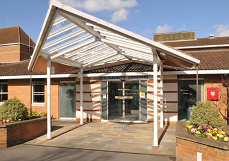

Locations
Audiology Plus currently holds offices atAshtead Hospital, St Anthony's Hospital & Saxonbury House.
Be sure to check back for more locations as we continue to expand.
ASHTEAD HOSPITAL
Click here to view our profile page
- The Warren, Ashtead KT21 2SB, UK
- By Appointment Only
SPIRE ST ANTHONY'S HOSPITAL
Click here to view our profile page
- 801 London Rd, Cheam, Worcester Park, Sutton SM3 9DW, UK
- By Appointment Only

SAXONBURY HOUSE MEDICAL GROUP
Click here to view our profile page
- Saxonbury House, Croft Rd, Crowborough TN6 1DL, UK
- Friday, 2:00pm - 6:00pm